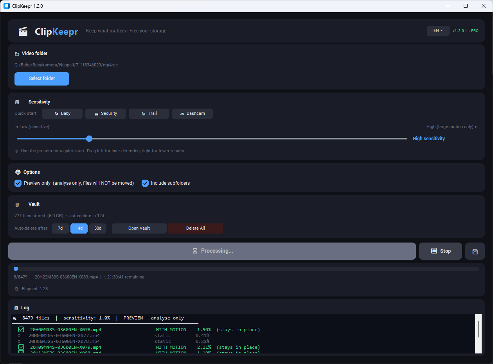

ClipKeepr automatically separates motion clips from static ones. Drop a folder, press Start — done in minutes.

Baby monitors and dashcams record 24/7. One week of footage = hundreds of files.
A single baby monitor fills a 64 GB card in days. Most of it: an empty room.
Scrubbing through 500 clips to find the 80 that matter takes hours you don't have.
Drop the folder. ClipKeepr scans every clip for motion and sorts them automatically.
Point ClipKeepr to any folder — or right-click a folder in Explorer to launch directly.
ClipKeepr analyses every video frame-by-frame in parallel. No action needed from you.
Static clips move to the Vault. Motion clips stay put. Delete what you don't need.
Analyses multiple files simultaneously. ~2000 files per hour on a typical PC.
Fine-tune with a slider. Presets for Baby, Dashcam, Security, and Trail cameras.
Static files move to a Vault folder, not the bin. Recover anything within 7–30 days.
Run a full analysis without moving a single file. See exactly what would happen first.
Your original folder hierarchy is mirrored exactly in the Vault. No files get lost.
Zero bytes uploaded. Ever. No cloud, no account, no login. Your footage physically cannot leave your PC — because ClipKeepr never connects to the internet.
If your camera records non-stop and stores to SD card or local folder, ClipKeepr works for you.
Offload your SD card without watching hours of an empty crib. Keep only the moments that matter.
Hours of highway driving with nothing happening. Let ClipKeepr find the incidents automatically.
Days of empty parking lot footage. ClipKeepr isolates the clips where something actually moved.
Thousands of files from a weekend in the woods. Find the wildlife, skip the wind-blown grass.
Try it free. Upgrade when you're ready.
* Local taxes may apply at checkout
Join parents and dashcam users who stopped wasting hours on empty footage.
Windows 10/11 · No installation required · v1.2.0